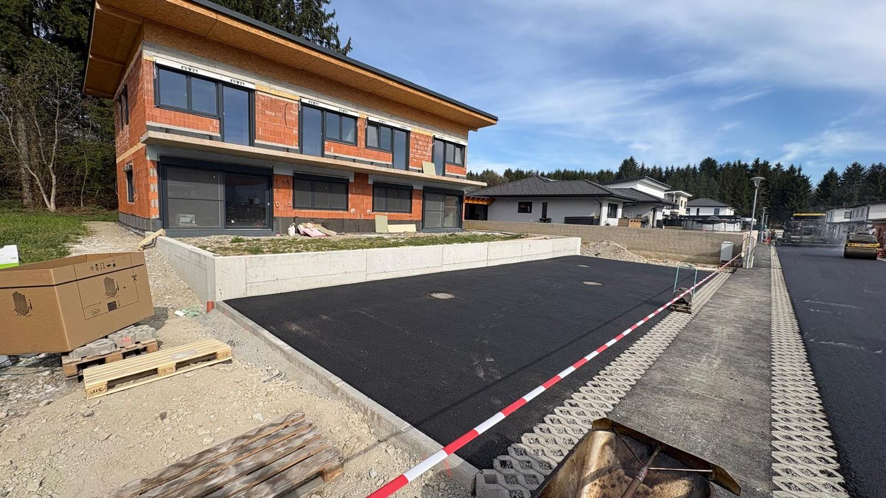
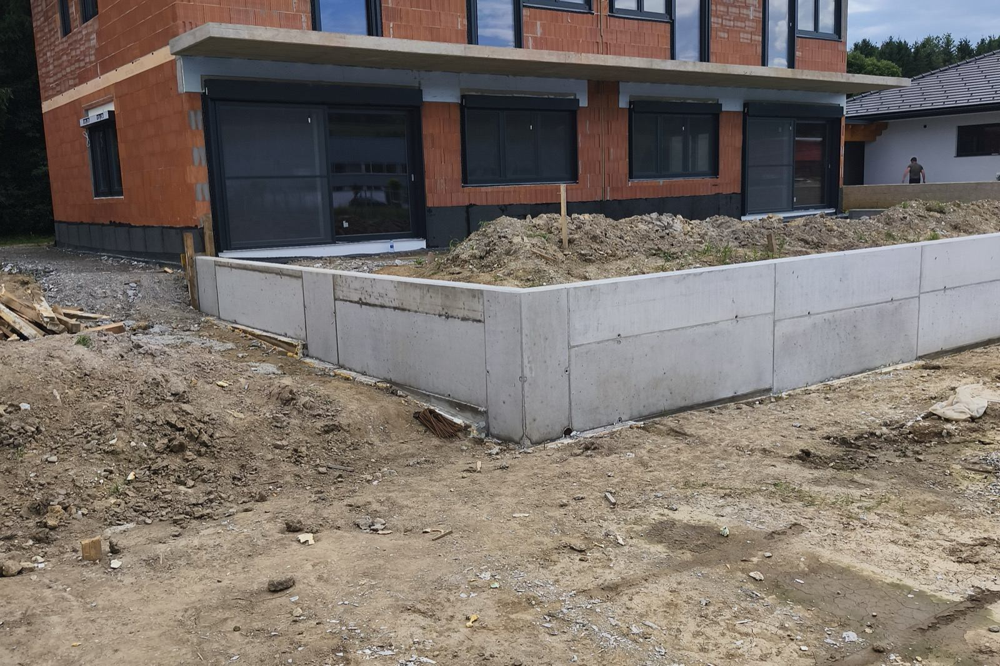
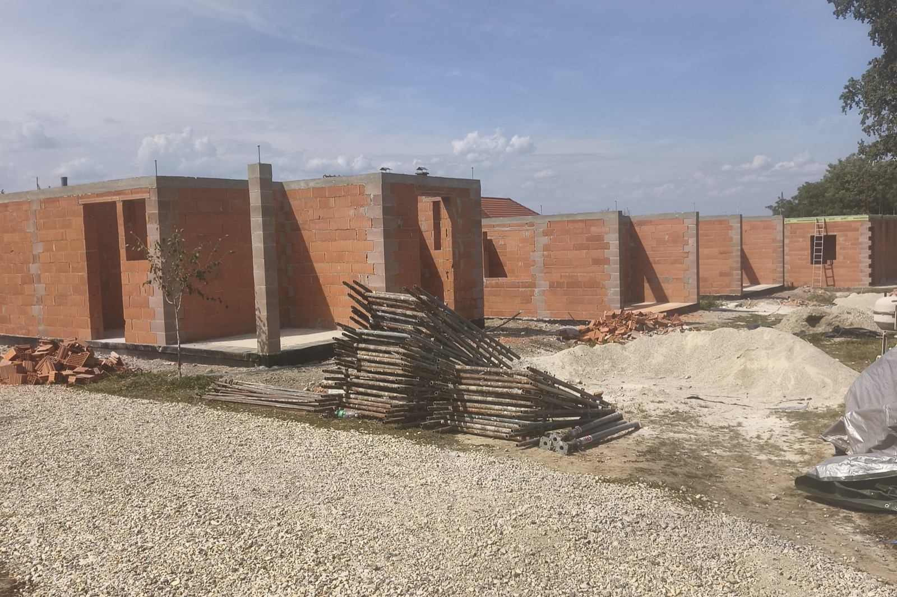

Fasade v Mariboru
Toplotnoizolacijske fasade in ometi – lepši videz in nižji stroški ogrevanja.

Nova ali obnovljena fasada
Izvedemo toplotnoizolacijske fasade na novogradnjah in obnovimo dotrajane fasade starejših objektov. Podlago ustrezno pripravimo, da zaključni sloj drži dolgo. Fasade izvajamo na novogradnjah in starejših hišah po vsem Mariboru in v okoliških krajih.
- Toplotnoizolacijske fasade (ETICS)
- Klasični in dekorativni ometi
- Priprava in izravnava podlage
- Obnova in sanacija starih fasad
- Zaključni sloji in barvanje
Urejene fasade in obnovljeni ometi.



Potek izvedbe fasade v Mariboru
Toplotnoizolacijsko fasado v Mariboru izvedemo po korakih – od priprave podlage do zaključnega ometa.
- Priprava in izravnava podlage
- Lepljenje in sidranje izolacijskih plošč (EPS ali kamena volna)
- Armirni sloj z vgrajeno mrežico
- Osnovni premaz za boljši oprijem zaključnega sloja
- Zaključni omet in po želji barvanje
Koliko stane fasada v Mariboru?
Cena fasade je odvisna od površine, debeline in vrste izolacije, stanja podlage ter dostopnosti objekta za postavitev odra. Po brezplačnem ogledu v Mariboru ali okolici (Ruše, Miklavž, Hoče, Rače, Pesnica, Lenart) pripravimo pošteno oceno za novo ali obnovljeno fasado, brez obveznosti.
Povprašajte za ponudboPogosta vprašanja
Katere vrste fasad izvajate?
Kdaj je najbolje izvesti fasado?
Koliko stane fasada v Mariboru?
Potrebujete novo ali obnovljeno fasado?
Pokličite ali pišite in dogovorimo se za ogled ter oceno del.